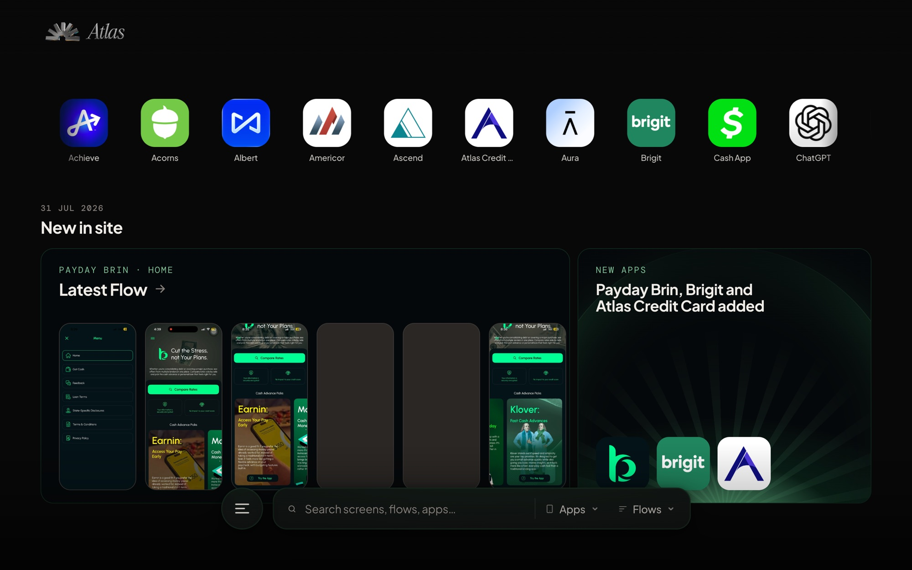
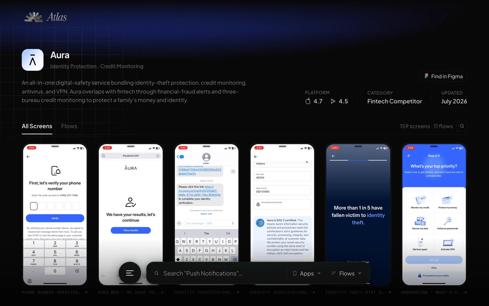
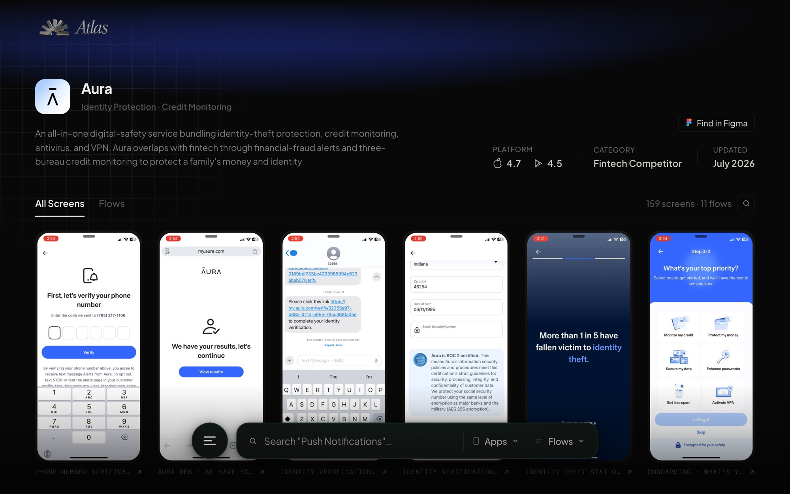
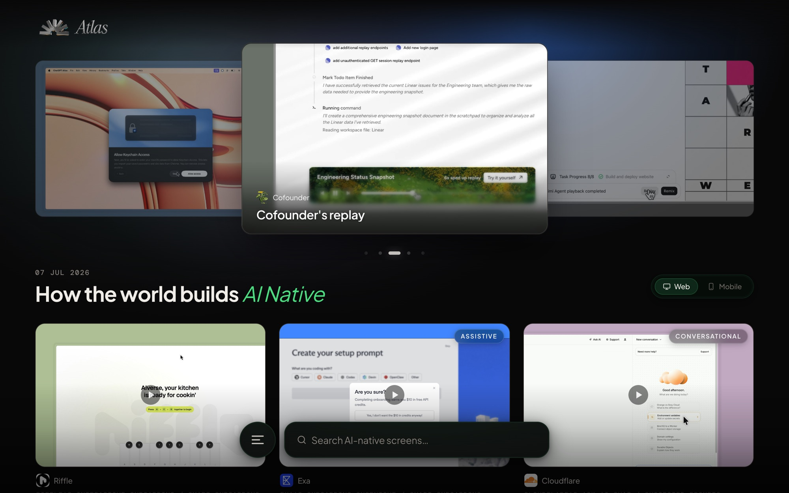

Finding a competitor reference used to take about an hour. It now takes about two minutes, and 12 of the 17 priority users (about 71%) adopted it.
The apps we compete with are fintech products that need accounts, onboarding and real bank connections before the interesting screens appear, so they are not on Mobbin or AppShots. Researchers had captured hundreds of flows and pasted them into Figma boards with no search.
A PM asking "how does this app handle payroll?" got a Slack message and a wait. We had the research. We had no way to surface it.
One private, searchable product for three kinds of questions.
What does this app's payroll screen and disclosure copy look like?
What pricing and onboarding does a competitor show in week two?
What is their full credit-building flow, and how do they pitch the upgrade?
Rejected. The flows we needed sit behind accounts, so they are not in any public library.
Rejected. Still no search, and it does not scale past a few hundred screens.
You cannot search pixels, so I needed metadata for every image.
I spent the first two weeks not building, working out whether this was possible. The answer was to teach Claude to look at each screenshot and mark it: which flow, which feature, what copy, which partner. Every image goes through that pipeline and comes out as structured data.
Then the infrastructure was straightforward: images in private storage, metadata in a database, and a web app in a private network that queries the data and serves the images.
V1 went live in [CONFIRM: timeline]. Three releases followed: more apps, an AI inspiration tab, then making Atlas queryable from an AI coding assistant through an internal plugin. It now covers 40 competitors and is updated weekly.




A routine credential rotation broke image access, because I had made the app depend on a key shared in a setup guide. I fixed it with engineering: secrets moved to environment variables, and a fallback added.
The lesson: any credential in a shared file is a dependency.
Finding a reference went from about an hour to about two minutes, measured as average time to complete the task. 12 of the 17 priority users (about 71%) adopted it. Research that was trapped in boards became searchable by flow, feature, screen type, copy and pricing.
Design director, senior designer, fellow designer, frontend engineer.
Shreyo Debnath · Product Designer